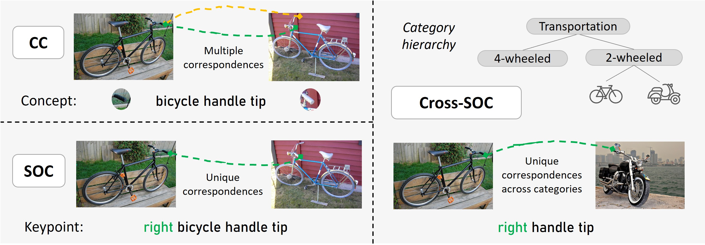
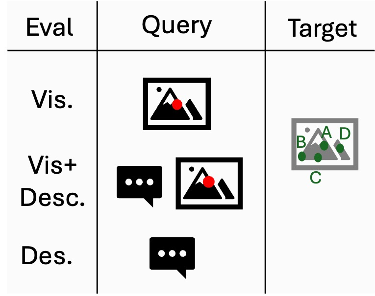
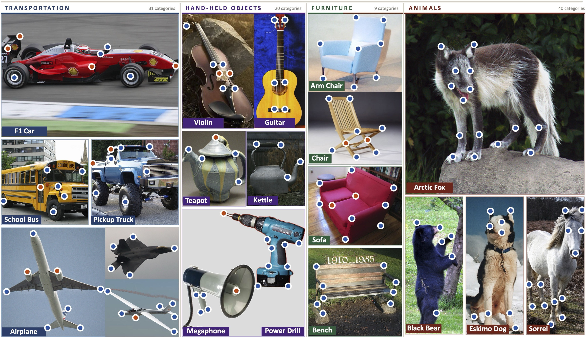

Measuring structured object understanding in vision foundation models remains challenging due to inconsistent evaluation protocols and limited part-level supervision. Semantic correspondence (SC) evaluates this capability by testing whether object parts can be matched across instances and categories under large variations in appearance, viewpoint, and geometry. To enable a systematic SC evaluation, we introduce SOCO, a new benchmark for Semantic Object Correspondence covering 100 categories and over 1M correspondence pairs. SOCO introduces a taxonomy of correspondence types, provides consistent and functionally meaningful keypoint annotations, and expands both the scale and category diversity of previous datasets. In addition, SOCO includes keypoint language descriptions, enabling the evaluation of large vision–language models (LVLMs) and their fine-grained part-level understanding. Comprehensive experiments reveal that (i) vision foundation backbones encode strong semantic structure but transfer correspondences poorly across related categories and only partially capture object-part position, (ii) LVLMs are stronger at text-prompted part localisation than at visual-reference cross-image matching, and (iii) correspondence performance correlates strongly with downstream tasks such as segmentation, tracking, 3D pose estimation, and 3D detection. Together, these findings position SOCO as a benchmark for evaluating structured, part-level representation quality in modern vision and multimodal foundation models.
A taxonomy-driven formulation of semantic correspondence that disentangles three distinct abilities collapsed by prior benchmarks: recognising the same local concept (CC), identifying the correct object-relative instance of that concept (SOC), and transferring concepts across related categories (Cross-SOC). This decomposition standardises what counts as a valid correspondence and makes distinct model failure modes separately measurable.
SOCO reframes correspondence evaluation around a taxonomy of object parts. Every keypoint is tied to a hierarchical, functionally meaningful concept, allowing consistent part definitions both within and across object categories.

SOC decomposes a single correspondence score into three progressively harder tasks, each isolating a distinct aspect of structured object understanding.
Match the same local semantic concept across instances (e.g., a wheel centre to a wheel centre) — pure part recognition, ignoring which specific instance it is.
Match the same concept with the same object-relative identity (front-left wheel to front-left wheel) — requiring awareness of object geometry and structure.
Match object-relative keypoints across related categories through shared taxonomy concepts (a wheel on a car, bus, or tractor) — requiring category-level abstraction.
SOCO substantially expands the scale, diversity, and consistency of prior correspondence datasets, and is the first to pair every keypoint with a natural-language description.
Categories span four super-classes — Transportation, Hand-held objects, Furniture, and Animals — sharing a hierarchical vocabulary of semantic concepts that enables consistent intra- and cross-category matching.
We evaluate a broad family of vision foundation models and large vision–language models on the SOC taxonomy, and study how SOC relates to dense downstream tasks across 37 vision models.
Strong backbones recognise local concepts well but degrade sharply when object-relative identity is required. Even the best model, DINOv2, drops from 77.4 (CC) to 60.8 (SOC) — a consistent CC→SOC repeated-part confusion across every model.
Moving from SOC to Cross-SOC reveals limited category-level abstraction: DINOv2 falls further to 58.6, and most backbones lose 15–23 points from CC, exposing reliance on category-specific appearance.
Current LVLMs are far stronger at text-prompted part localisation than at visual-reference cross-image matching. Qwen2.5-VL-7B rises from 18.7 (Vis.) to 49.0 (Desc.) — yet all remain well below the DINOv2 ceiling of 79.4.
Across 37 vision models, SOC correlates with dense downstream tasks — segmentation, tracking, 3D pose, 3D detection — far more strongly than ImageNet kNN classification, making it a practical zero-shot probe of representation quality.
PCK@0.1 across the three correspondence tasks. Click a row to toggle that model on or off in the chart — the lines make the CC→SOC→Cross-SOC drop visible for every model.
| Model | CC | SOC | Cross-SOC | Avg |
|---|---|---|---|---|
| DINOv2 | 77.4 | 60.8 | 58.6 | 65.6 |
| DINOv3 | 68.4 | 57.2 | 49.5 | 58.4 |
| C-RADIOv3 | 67.8 | 51.4 | 47.1 | 55.4 |
| I-JEPA | 59.4 | 47.2 | 36.8 | 47.8 |
| PE-Spatial | 58.2 | 43.6 | 38.8 | 46.9 |
| DUNE | 58.0 | 46.5 | 37.3 | 47.2 |
| SD 2.1 | 53.8 | 45.8 | 37.3 | 45.6 |
| iBOT | 54.3 | 40.5 | 37.1 | 44.0 |
| PIXIO | 48.3 | 38.5 | 29.7 | 38.8 |
| DINOv1 | 42.9 | 31.4 | 22.3 | 32.2 |
| QWEN-L | 26.3 | 19.9 | 12.2 | 19.5 |
| CLIP | 24.4 | 16.4 | 10.5 | 17.1 |
| CroCov2 | 15.1 | 10.6 | 5.3 | 10.3 |
| MAE | 14.7 | 10.1 | 5.0 | 9.9 |
Across 37 vision models, we compare how well SOC and ImageNet kNN predict performance on dense downstream tasks (Pearson r). SOC dominates kNN on every task.
All settings show the target image with candidate keypoints; only the query differs. Vis. marks the query in a source image, Vis.+Desc. adds the keypoint description, and Desc. uses the description alone. LVLMs improve markedly as language is added, but trail the DINOv2 vision baseline.
| Method | Vis. | Vis.+Desc. | Desc. |
|---|---|---|---|
| Random | 0.4 | 0.4 | 0.4 |
| DINOv2 vision baseline | 79.4 | 79.4 | 79.4 |
| LLaVA-OV-7B | 5.5 | 16.1 | 35.0 |
| LLaVA-OV-1.5-8B | 21.7 | 33.0 | 43.8 |
| Qwen2.5-VL-3B | 14.7 | 26.4 | 39.3 |
| Qwen2.5-VL-7B | 18.7 | 39.8 | 49.0 |
| InternVL3.5-8B | 25.1 | 39.8 | 41.5 |

Taxonomy-driven keypoint annotations across diverse categories, with consistent semantic concepts and object-relative identities.

AK acknowledges support via his Emmy Noether Research Group funded by the German Research Foundation (DFG) under grant number 468670075.
This research was funded by the Deutsche Forschungsgemeinschaft (DFG, German Research Foundation) under grant number 539134284, through EFRE (FEIH_2698644) and the state of Baden-Württemberg.
We thank Matthis Heimberg for early analyses and experiments.
@misc{duenkel2026soco,
title = {SOCO: Benchmarking Semantic Object Correspondence in Vision Foundation Models},
author = {D{\"u}nkel, Olaf and Sunagad, Basavaraj and Wang, Haoran and
Hoffmann, David T. and Theobalt, Christian and Kortylewski, Adam},
year = {2026},
eprint = {XXXX.XXXXX},
archivePrefix = {arXiv},
primaryClass = {cs.CV},
url = {https://arxiv.org/abs/XXXX.XXXXX}
}